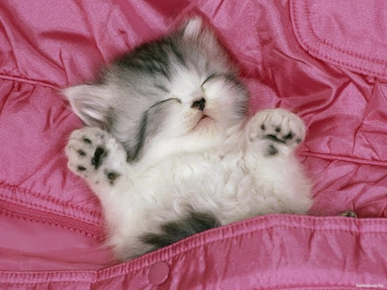

На Вашій сторінці є малюнок. При наведенні миші на цей малюнок він повинен змінитися.
Коли Ви відведете мишку в сторону, малюнок має набути початкового вигляду.
Ввести № телефона(поле вводу) і назву міста (з клавіатури). Якщо введено місто, яке немає в списку,
то повідомте про це користувача, інакше вивести № телефона, поставивши перед ним код міста.
